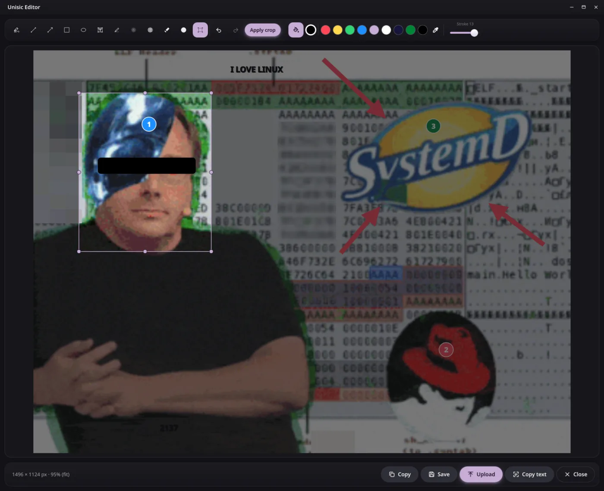
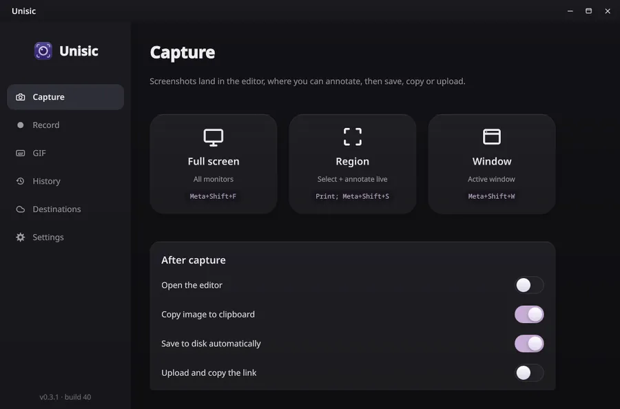
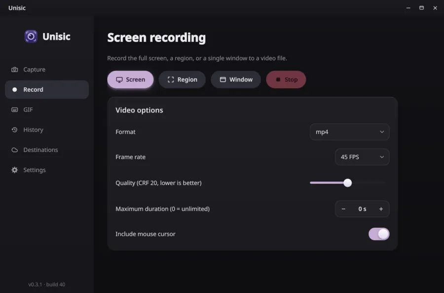
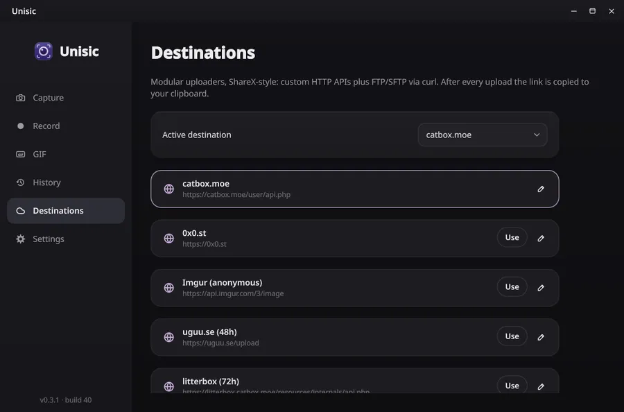
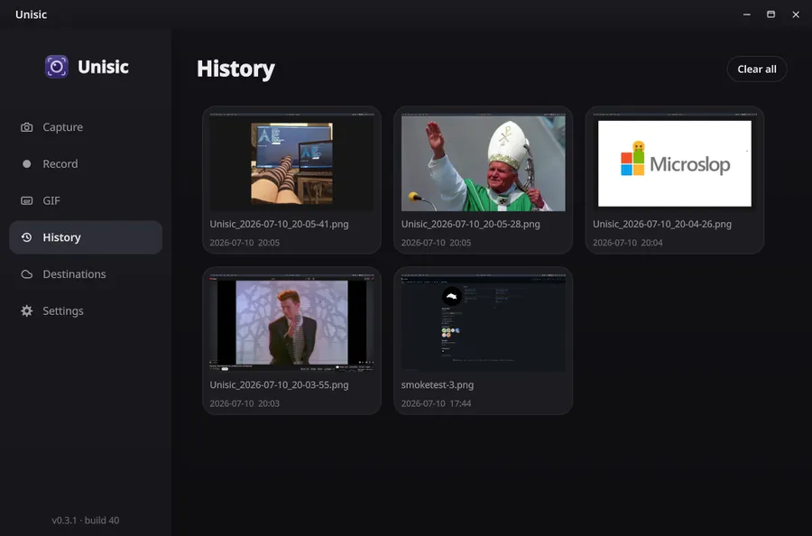
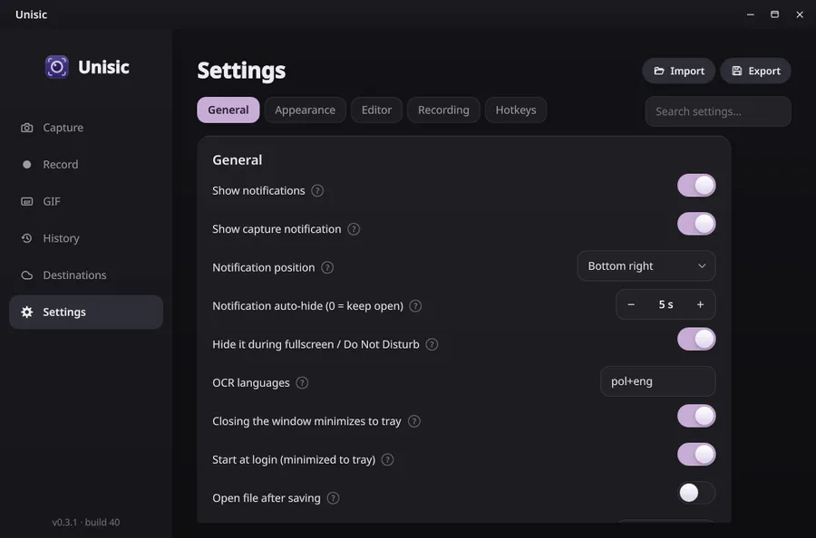

Developer · Katowice, Poland
DeanDark
Building open-source tools for Linux. Creator of Unisic - screenshots done right.

A curious mind with a keyboard
Hi, I'm DeanDark - a developer from Katowice, Poland who's interested in a lot of things. I wrote my first lines of code when I was about 10 years old, and it stuck ever since.
Along the way I picked up HTML, CSS, JavaScript, Python, C# and SQL, but these days most of my time goes into C++ and QML - that's the stack behind Unisic, my biggest project so far. I like building things that are actually useful and getting the small details right.
I try to learn as much as I can about the things I care about, but I don't like forcing it. For me, to learn something well there has to be a real desire to learn it - and the same goes for everything else. Nothing good comes out of doing it by force.
I also like helping people. For a long time I was part of the support team of the StartIT Discord bot - these days that energy goes into Unisic, the folks who use it, and my own community server, Horyzont Zdarzeń.
Away from the editor I'm comfortable in the terminal and know my way around self-hosting - Linux servers, containers, reverse proxies and how the pieces fit together. Linux is where I live, and Fedora is my daily driver.
What I'm focused on
A quick snapshot of where my time goes these days.
Building Unisic
Shipping features, fixing edge cases and shaping the whole capture-to-share workflow on Linux.
Sharpening C++ & QML
Going deeper into native desktop development - performance, clean architecture and better UI.
What I work with
The tools I reach for, grouped by what they're for.
Languages
Frameworks & UI
Platform & tooling
Ops & self-hosting
The machine
Where the code - and the occasional game - happens.
When I'm not coding
Odds are I'm gaming. A few long-time favourites:
on Steam Lvl 42
Unisic
Linux · Wayland · GPLv3Most snipping tools stop at a screenshot. Unisic is everything that should happen after.
A screenshot & recording app for Linux (Wayland) that covers the whole workflow: draw on the selection before the shot is even taken, polish it in the editor, record the same region as a GIF or video, and send the result where it belongs - clipboard, disk, or your own upload destination with the link ready to paste. Built on legitimate APIs only, with zero telemetry.
# enable the repo and install $ sudo dnf copr enable deandark/Unisic $ sudo dnf install unisic
Built with C++20 · Qt 6 · QML on legitimate Wayland APIs -
xdg-desktop-portal, KWin ScreenShot2, PipeWire.





Other things I've made
Smaller projects from over the years - mostly web.
The road so far
How I got from a curious kid to building software for Linux.
First lines of code
Around age 10 I wrote my first bits of code out of pure curiosity - and never really stopped.
Learning the craft
Picked up HTML, CSS and JavaScript, then Python, C# and SQL. Shipped small sites and side projects to figure out how things fit together.
Helping on StartIT
Joined the support team of the StartIT Discord bot and learned a lot about people, patience and explaining things clearly.
Switching to Linux
Jumped ship, hopped across distros until Fedora stuck, and fell for the UNIX philosophy along the way - the terminal has been home ever since.
Unisic & what's next
Turned all of that into Unisic - and I'm still learning, tinkering with Linux, and building the next thing.
Like what Unisic does?
It's free, open source and built for Linux. Grab it, try the workflow, and tell me what you think.
Say hi
The fastest way to reach me is Discord, but any of these work.